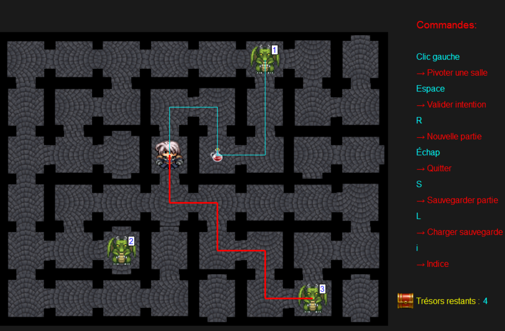
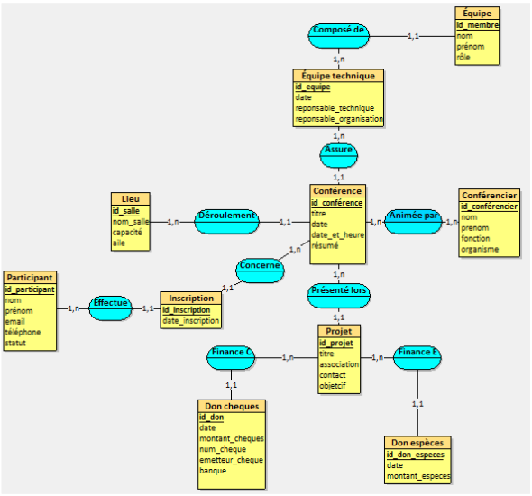

Pourquoi ce portfolio ?
Ce portfolio présente mon parcours, mes compétences, mes projets et mes objectifs professionnels dans les domaines du développement informatique, du web et de la cybersécurité.
Me connaître
Étudiant en BUT Informatique, passionné par le développement, les systèmes et la cybersécurité. J’aime comprendre comment les choses fonctionnent, apprendre en expérimentant et créer des projets qui ont du sens.
Montrer des preuves
Je crois que les compétences se démontrent avant de se raconter. Chaque projet est une occasion d’apprendre, de tester mes limites et de montrer ce que je sais réellement faire.
Suivre ma progression
Ce portfolio me permet de visualiser mon évolution : mes réussites, mes erreurs, mes améliorations. Il centralise mes projets, mes compétences et mes objectifs, pour mesurer mon parcours.
Objectif professionnel
À court terme, je veux consolider mes compétences en développement, systèmes et cybersécurité.
À long terme, je souhaite évoluer vers un poste spécialisé en cybersécurité.
Mission personnelle
Créer des solutions fiables, claires et utiles, avec une éthique de travail rigoureuse.
Importance donnée à la pédagogie, la compréhension et la transparence.
Parcours & CV
BUT Informatique
Étudiant à l’Université Gustave Eiffel
Projets académiques & personnels
Développement web, Python, maquettes réseau, cybersécurité.
Compétences
Développement
- HTML / CSS
- Python
- C
- Arduino
- Java
- SQL
- Git / GitHub
Systèmes & Réseaux
- Bases Linux
- Notions réseau
- Virtualisation
Cybersécurité & Soft skills
- Curiosité & rigueur
- Travail en équipe
- Autonomie
Projets & preuves
Quelques exemples de travaux illustrant mes compétences.

Wall is You
Jeu Python où un aventurier explore un donjon composé de salles orientées.

Conception d'une BDD
Conception et implémentation d’une base de données MySQL complète.
Formations & perfectionnement
Formation académique
BUT Informatique – en cours d'apprentissage...
Autoformation
Apprentissage continu via ressources en ligne et projets personnels.